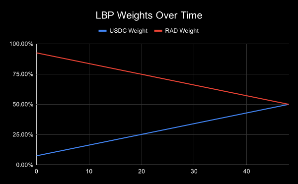
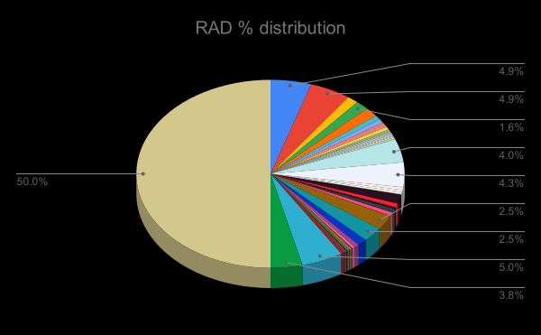

Questions
Back to the chartThe Radicle network will offer 3.75m Radicle tokens over 48 hours, from 25.2.2021 ~16:30 UTC till 27.2.2021 ~16:30pm UTC.
The event will take place on a decentralized exchange named Balancer, using a mechanism called Liquidity Bootstrapping Pool. Any proceeds generated from the event will go to the Radicle Treasury, a smart contract fully and transparently controlled by the Radicle token holders.
The official Radicle Twitter account will tweet the contract address, in addition to the Radicle blog. You can track the status of the LBP event on lbp.radicle.network. Everything else should be considered a scam. Please make sure the Balancer address is the same as the contract address when proceeding.
🚨 The Balancer LBP is not like a regular Balancer pool. The price will start high to disincentivize bots, front-running and speculation. Over time, the price will automatically decrease by design, so only participate if you know what you are doing.
Questions
Q1: What is the purpose of this event?
The purpose of the proposed Liquidity Bootstrapping event is to:
- Distribute the Radicle token among the wider Radicle community, beyond early contributors and team members, to decentralize decision-making power.
- Build deep liquidity for the Radicle network, setting it up for long-term success.
- Begin price discovery for the Radicle token.
Q2: What is a Liquidity Bootstrapping Pool?
Balancer is a decentralized exchange that allows anyone to swap one token for another. It’s built entirely on smart contracts, allowing transactions to take place securely and without the need for an intermediary.
Balancer’s Liquidity Bootstrapping Pool (LBP) is a Balancer pool that automatically adjusts its pool weights over time. This applies downward price pressure on the token and disincentivizes front-running, speculation and whale buying. See Balancer’s Liquidity Bootstrapping Pool FAQ for more information.
Q3: Why was this specific mechanism (LBP) chosen?
The LBP has a number of properties that are desired for a liquidity bootstrapping event:
- It prioritizes humans over bots
- It deals with front-running well
- It optimizes for smaller orders instead of “whale buying”
- The distribution is permissionless and scalable
This mechanism has also been battle tested by a number of teams like Hydra, APY Finance, and Perpetual protocol.
Q4: Where will the proceeds go?
The proceeds will go to the Radicle Treasury, a smart contract managed fully and transparently by the Radicle token holders. Read more about the Radicle Treasury and its governance here.
Q5: What about members of the community that don’t have the funds or the technical expertise to participate in this event?
While this will be one way to become a member of the network, it won’t be the only way. The Radicle network aspires to be the first community owned and operated network for code collaboration. Understanding that not everyone has the capital or technical expertise to participate in this event, there are active plans to present proposals to the Treasury that address those concerns by allowing community members to “earn” tokens for their contributions to Radicle.
Q6: How many Radicle tokens exist?
There are 100m Radicle tokens (fixed issuance).
Q7: How many tokens are in circulation?
There are 9,909,526 Radicle tokens in circulation, including the tokens that will become available through the Liquidity Bootstrapping Event.
Q8: What tokens does the pool accept?
The pool accepts swapping RAD for any token available on Balancer, however, it will be cheapest to swap RAD for USDC.
Q9: How was the initial price calculated?
The price was calculated based on the amounts of tokens in the Balancer pool and their weights:
3 750 000 RAD and 3 500 000 USDC in weights 92.5 : 7.5 = (3500000*92.5)/(3750000*7.5) = 11.5 USDC per RAD
Q10: How is the last price calculated?
The last price is hard to estimate because it depends on the changing weights of the LBP and the demand for buying RAD. In the scenario that there is no demand at all the last price given will be:
3 750 000 RAD and 3 500 000 USDC in weights 50 : 50 = (3500000*50)/(3750000*50) = 0.933 USDC per RAD
You can see a model (that assumes no demand) here. You can copy it and experiment with behavior on the “Simulation” tab. Thank you to Perpetual protocol for sharing this model with the world!
Q11: How are the price weights expected to change over time? Is there a price graph anywhere?
The price weights start at 92.5:7.5 and change linearly over time towards a 50%-50% split after 48 hours. See the graph below:
Q12: What is the maximum and minimum amount of contribution?
There is no minimum or maximum as LBPs work differently than traditional exchanges.
Q13: If there is no maximum, can someone buy all the tokens?
While this is theoretically feasible, in practice it would lead to a massive increase in price, because of slippage and the way AMMs work. Therefore, it's extremely unlikely.
Q14: Who founded the Radicle project?
The Radicle project was founded by Alexis Sellier and Eleftherios Diakomichalis at the beginning of 2018.
Alexis Sellier was previously doing distributed systems at Cosmos and is the author of a number of high profile open source projects.
Eleftherios was previously the Vice President for Data Science and Engineering at Soundcloud.
Q15: Who are the existing supporters of the project?
Existing supporters include Placeholder, Blueyard, Galaxy Digital, NFX, Electric, Parafi, Coinfund, 1kx, Fenbushi, Hashkey, Coinbase Ventures, eGirl, Naval Ravikant, Fred Ersham, Balaji Srinivasan, Meltem Demirors as well as the founders of Aave, TheGraph, PolkaDot.
Q16: What is the distribution of tokens between supporters and early contributors?
Note: The 50% allocation slice is % of total supply that is controlled by the Treasury
Q17: How many projects are already in Radicle?
Radicle is a peer-to-peer network (like IPFS) so it’s hard to know exactly the precise number of projects in the network. Although, the core-team is operating a seed-node in the network, where more than 1200 projects have been replicated and this number has been growing really fast! The average growth rate week-over-week has been ~8%.
Q18: How much did the project raise in its last fundraising round?
Most recently, the Radicle project raised $12m to support the development of the network, at $1.5 per Radicle token.
Q19: What is the allocation and release schedule for supporters and team?
100M Radicle tokens (fixed) have been minted at genesis and will be vested over the course of 4 years.
- 50% Community Treasury (vesting over 4 years)
- 19% Team (4 year vesting from join date, 1 year lock-up from genesis)
- 20% Early Supporters (1 year lock-up*)
- 5% Foundation (1 year lock-up)
- 2% Seeders Program (1 year lock-up*)
- ~4% Liquidity Bootstrapping Pool
* The lock-up release schedule varies based on jurisdiction.

Q20: Where can I read more about other Liquidity Bootstrapping pools?
You can find some helpful resources below:
- Perpetual Protocol - Whey we chose to distribute PERP using an LBP
- Hydradx LBP FAQ
- APY Finance LBP step-by-step guide
- APY Finance Token Generating Event on Balancer’s LBP